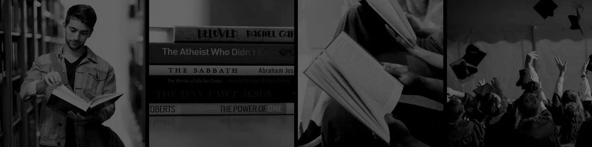

Informacion
El Club Atlético Peñarol es una institución deportiva de Montevideo, Uruguay.
ORIGEN
Toma su nombre del barrio Peñarol, ubicado al noroeste de la ciudad.Actualmente se desempeña en la Primera División de Uruguay.
Su origen data del 28 de septiembre de 1891, con el surgimiento del Central Uruguay Railway Cricket Club (conocido por su acrónimo CURCC).
Hubo un primer intento para cambiar el nombre a CURCC Peñarol, pero la directiva del CURCC rechazó la propuesta por 25 votos contra 12.
El 13 de diciembre de 1913 pasó a llamarse Peñarol, adoptando el nombre definitivo de Club Atlético Peñarol el 12 de marzo de 1914.
Algunos investigadores, en cambio, sostienen que si bien Peñarol heredó del CURCC su tradición y existe una continuidad sociológica entre ambos,
jurídicamente son dos instituciones diferentes, puesto que el CURCC siguió existiendo hasta el año 1915
(aunque como mera dependencia recreativa para los empleados de la empresa de ferrocarriles),
y vendió sus bienes donando el dinero obtenido al Hospital Británico, y por lo tanto la fecha de fundación del club sería el 13 de diciembre de 1913.
Este es el origen de la discusión sobre el decanato.
A pesar de que los colores del CURCC eran originalmente NEGRO y NARANJA ,Peñarol a lo largo de su historia siempre se ha identificado con el amarillo y el negro, tomados de la Locomotora Rocket y representativos del gremio ferroviario en general.
A través de su historia ha incursionado en diversos deportes, destacándose en el baloncesto y el ciclismo. A pesar de ello, su dedicación ha sido casi exclusiva al fútbol, deporte por el cual ha obtenido un amplio reconocimiento.
El club disputa sus partidos de local en el estadio Campeón del Siglo ,
inaugurado a fines de marzo de 2016 y con capacidad para 40 005 espectadores.
Se ubica sobre la Ruta 102 entre Camino Mangangá y Camino de los Siete Cerros , en el departamento de Montevideo. Anteriormente Peñarol ejerció por varias décadas su localía en el estadio Centenario, de propiedad municipal.
El club también tiene un estadio de básquetbol (Palacio Contador Gastón Güelfi)y su campo de entrenamiento (Complejo Deportivo Washington Cataldi).
A nivel local, en la era profesional Peñarol ha ganado 42 torneos,y considerando la era amateur y los torneos obtenidos por el CURCC, ha ganado 51 títulos. Adicionalmente, Peñarol se consagró campeón de la Federación Uruguaya de Football (FUF) en 1924 y del Torneo del Consejo Provisorio en 1926.En el plano internacional, es el tercer club que en más ocasiones se ha adjudicado la Copa Libertadores, cinco veces,24 y el primero en obtener por tercera vez la Copa Intercontinental, galardón que comparte con otros cuatro clubes.25.
Su clásico rival en el fútbol uruguayo es Nacional, la rivalidad más antigua del fútbol fuera de las Islas Británicas. Disputaron más de 500 partidos entre sí, con ventaja para Peñarol en el historial.